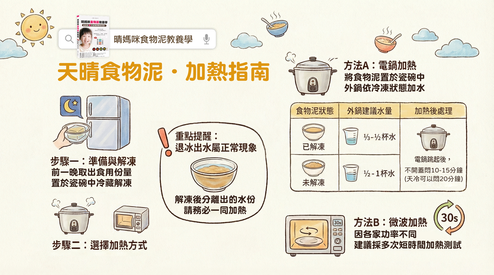

1什麼時候吃
🏥
當正餐
不好咀嚼吞嚥的人，或管餵、復健中的人，
可以直接當成正餐食用
2吃多少
先從少量開始，習慣了再慢慢增加。
不用一開始就吃到建議量，身體適應最重要。
▶
🌾 食物泥
基礎保養
每次 200 g
主食 100g ＋ 四大類食材各 25g
約 50 多種食材營養
營養加倍
每次 400 g
主食 200g ＋ 四大類食材各 50g
約 50 多種食材營養
🥤 蔬果昔
基礎保養
每次 1 盒 共 150 g
一盒約 15-18 種食材營養
3加熱方式

4注意事項
食物泥與蔬果昔可以交替食用，換換口味。
建議長期持續食用，作為每日的營養補充。
冰磚退冰的水，請勿倒掉
那些水也是營養，必須跟食物泥一起加熱。
吃的時候要咀嚼
食物泥和蔬果昔富含膳食纖維。
咀嚼能讓口腔分泌消化酶，更好吸收消化、也比較不會脹氣。
如有特殊飲食限制，請先諮詢醫師或營養師。